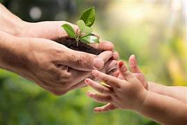

COMO CUIDAR LA NATURALEZA

Cuidar la naturaleza es una responsabilidad de todos, y aunque los problemas ambientales son grandes, nuestras acciones diarias pueden hacer una gran diferencia. Algunas de las formas más efectivas de proteger el planeta incluyen:
- Reciclar y reutilizar: Separar la basura, aprovechar materiales como papel, cartón, vidrio y plástico, y darles un nuevo uso en lugar de tirarlos. Esto reduce la contaminación y el uso de recursos naturales.
- Usar menos plásticos: Evitar productos desechables como bolsas, botellas y popotes. Usar bolsas de tela, botellas reutilizables y recipientes duraderos.
- Plantar árboles: Los árboles purifican el aire, reducen el calor, protegen el suelo y sirven de hogar para muchas especies. Cada árbol plantado es una ayuda directa al medio ambiente.
- Ahorrar agua y energía: Cerrar llaves mientras no se usan, arreglar fugas, usar focos LED, apagar luces y aparatos que no se necesiten, y aprovechar la luz natural.
- No tirar basura en la calle o el campo: La basura contamina suelos, ríos y mares, daña la fauna y afea el entorno. Siempre hay que usar los botes adecuados o llevar la basura hasta encontrar uno.
- Usar transporte sostenible: Caminar, usar bicicleta o transporte público en lugar de automóviles reduce la contaminación del aire y las emisiones de gases de efecto invernadero.
- Consumir de forma responsable: Comprar solo lo necesario, elegir productos locales y ecológicos, y evitar el desperdicio de alimentos.
- Cuidar la flora y la fauna: No arrancar plantas ni molestar a los animales. Respetar la vida silvestre y no comprar especies en peligro de extinción.
- Participar en actividades ecológicas: Unirse a campañas de limpieza, reforestación, reciclaje o educación ambiental en tu comunidad o escuela.
- Informarse y educar a otros: Compartir lo que sabes sobre el cuidado del planeta con familiares y amigos ayuda a crear una cultura de respeto por la naturaleza.

 IR AL INICIO
IR AL INICIO